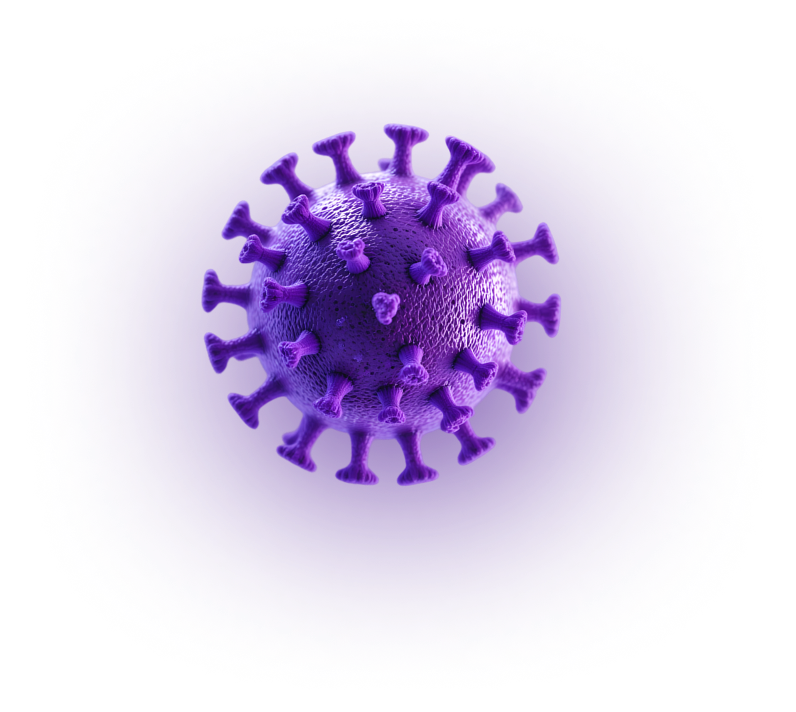

Dashboard
Muhammad Haris S.
admin
Total Pasien
32,450
-2,201Total Penyakit
32,450
-2,201Total Gejala
32,450
+2,201Total Aturan
21,324
+2,031

Silakan gunakan tombol Diagnosa di bawah untuk memulai diagnosis.
Mulai Diagnosa
Grafik Persebaran
Grafik Berdasrakan Kategori
- Kanker Paru-paru
- Kanker Payudara
- Kanker Prostat
Riwayat Hasil Diagnosa
| No | Tanggal Diagnosa | Nama Pasien | Hasil Diagnosa | Jenis Kanker | Dokter | Aksi |
|---|---|---|---|---|---|---|
| 1 | 12 Juni 2024 · 09:15 | Andi Pratama | Kanker Paru-paru | Positif | dr. Siti Rahma | Detail Cetak |
| 2 | 10 Juni 2024 · 14:30 | Siti Aminah | Kanker Payudara | Negatif | dr. Budi Santoso | Detail Cetak |
| 3 | 8 Juni 2024 · 11:00 | Rina Wijaya | Kanker Prostat | Positif | dr. Siti Rahma | Detail Cetak |
| 4 | 5 Juni 2024 · 16:45 | Bambang Setiawan | Kanker Paru-paru | Negatif | dr. Budi Santoso | Detail Cetak |